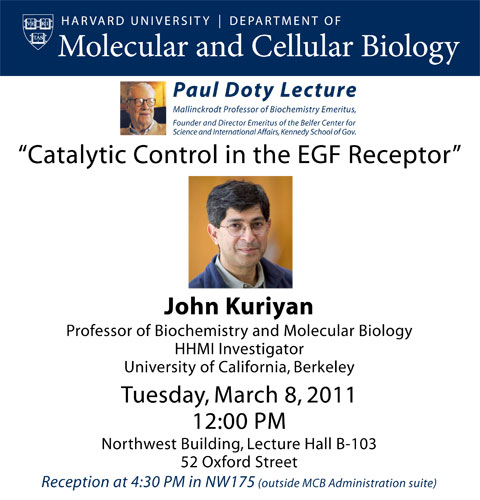

News Archives : 2011 : John Kuriyan to Deliver 2011 Paul Doty Lecture
by David Jeruzalmi
March 28, 2011

Professor John Kuriyan will present the 2011 Paul Doty Lecture on March 8, 2011. This lecture is presented annually to celebrate the scientific and public policy achievements of Professor Paul Doty, founder of both the Department of Biochemistry and Molecular Biology (currently, Molecular and Cellular Biology) and the Belfer Center for Science and International Affairs at Harvard University.
John Kuriyan will present his lecture, titled “Catalytic Control in the EGF Receptor” at 12 pm in room B-103 of the Northwest Building. Professor Kuriyan’s scientific interests center on the structure and mechanism of the molecular machines that cells use 1) for communication and signalling and, 2) to replicate their genomes accurately. Over the past 25 years, Professor Kuriyan has systematically taken these machines apart, studied their structure and function, and then put them back together in order to achieve a complete view of how they work. One abiding interest of Professor Kuriyan’s has been how protein kinases are switched ‘on’ and ‘off’ in the cell. Protein kinases are cellular enzymes that attach phosphate groups to other proteins as part of a sophisticated cellular communication and signaling system. The power to be switched ‘on’ and ‘off’ makes kinases crucial participants in nearly every important cellular process. Accordingly, malfunction of these important components contributes to the development of many human diseases, including cancer.
A second area of intense interest has focused on how genomes are duplicated. All cells use sophisticated molecular machines to rapidly and accurately make copies of their chromosomal DNA, so that they can be passed to their progeny. In 1992, Kuriyan, and long-time collaborator Professor Michael O’Donnell, began to study important pieces of one of these machines, the bacterial DNA polymerase III. Their ground-breaking studies since then have laid the foundation for a more complete understanding of DNA replication.
John Kuriyan is Chancellor's Professor at the University of California Berkeley in the Departments of Molecular and Cell Biology (MCB) and Chemistry. He is also a Faculty Scientist in Berkeley Lab's Physical Biosciences Division, and a Howard Hughes Medical Institute investigator. Kuriyan received his B.S. in chemistry from Juniata College in Pennsylvania, followed by his PhD at the Massachusetts Institute of Technology, working with Professor Gregory Petsko and Professor Martin Karplus. Kuriyan has been honored with many awards during his career, including election to the National Academy of Sciences in 2001.
Professor Paul Doty is the Mallinckrodt Professor of Biochemistry Emeritus and also Director, Emeritus, of the Belfer Center for Science and International Affairs, which he founded at the John F. Kennedy School of Government in 1974. He is now emeritus professor in the Faculty of Arts and Sciences (1988) and in the Kennedy School of Government (1990).
As a biochemist, Doty elucidated the structure and function of large molecules, from polymeric molecules, which constitute plastics and fibers, to polypeptides and polynucleotides, which consist of single repeating units of the kind involved in proteins and nucleic acids. He is perhaps best known for demonstrating the denaturation of the double-stranded DNA molecule and its reuniting through hybridization; this technique was a key to the era of recombinant DNA research.
As an advocate for arms control, Doty led and participated in many initiatives to bring Russian and American scientists together in pursuit of international security, making more than 40 trips to the Soviet Union. He was a member of the President's Science Advisory Committee (PSAC) during the Kennedy Administration. After retirement, he continued working in this area, for example serving as board member of Soros' International Science Foundation, which provided critical research support to Russian scientists in the 1990s.
[posted March 28th,, 2011]